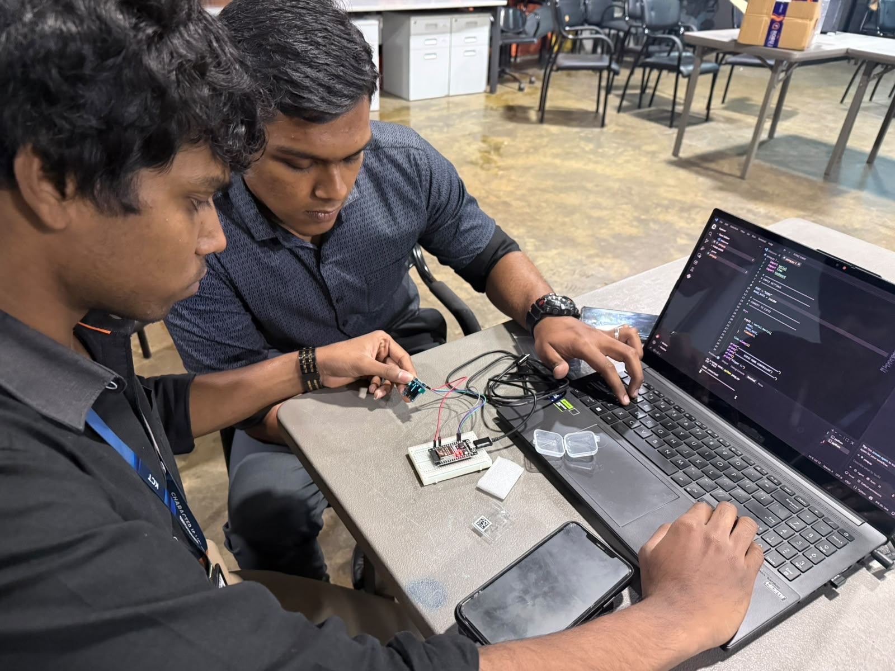

On / Off Inbuilt LED on ESP32
Control the ESP32 onboard LED wirelessly through a local browser-based HTTP server.
1. Overview
In this experiment, the ESP32 functions as a standalone local HTTP web server connected to a Wi-Fi network. By hosting a lightweight web page directly on the microcontroller, the device listens for incoming HTTP requests initiated from any web browser on the same local subnet.
When a user visits the assigned local IP address and clicks the interactive on-screen controls, the browser issues specific HTTP request endpoints (/on and /off). The ESP32 parses these URIs, toggles digital output pin GPIO 2 connected to the onboard surface-mount device (SMD) LED, and immediately returns dynamically updated HTML content confirming the live operational state of the LED.
2. Objective
The primary objective of this assignment is to demonstrate the capability of the ESP32 microcontroller to serve as a self-hosted embedded HTTP web server, enabling wireless LED control directly from a standard web browser — without any cloud infrastructure or external server.
- Configure the ESP32 as an HTTP web server operating on port 80 over a local Wi-Fi network.
- Serve a dynamic HTML control interface that reflects the real-time state of the onboard LED (GPIO 2).
- Respond to browser-initiated HTTP requests at endpoints
/onand/offto toggle the LED state. - Print the assigned IP address to the Serial Monitor so the web interface can be accessed from any device on the same subnet.
- Validate end-to-end wireless actuation — from browser click to observable physical LED response — within a local area network.
3. Problem Statement
Traditional embedded systems require physical access to a device or proprietary wired interfaces (UART, SPI, I²C) to control hardware outputs. This creates practical limitations in scenarios where remote, wireless, or hands-free control is necessary.
This experiment addresses the following problem: How can an ESP32-connected LED be controlled remotely through a local web interface without any cloud dependency, mobile application, or dedicated protocol such as MQTT?
The solution requires the ESP32 to independently host a responsive HTML control panel reachable via any browser on the same local network, bridge browser-level HTTP GET requests to GPIO output actions, and return immediate state feedback — all executing concurrently on the microcontroller's main loop with no dedicated operating system or additional hardware.
4. Introduction
The ESP32 (Espressif Systems ESP-WROOM-32) is a dual-core 32-bit microcontroller featuring integrated 802.11 b/g/n Wi-Fi and Bluetooth 4.2 / BLE radios. It operates at up to 240 MHz, with 520 KB SRAM and 4 MB flash, making it capable of running lightweight network stacks entirely in firmware — a foundational building block for the Internet of Things (IoT).
Wi-Fi Connectivity: The ESP32's integrated Wi-Fi radio operates in Station (STA) mode for this experiment, associating with an existing wireless access point using SSID and password credentials. After a successful DHCP lease, the device obtains a local IPv4 address, enabling it to communicate over TCP/IP within the subnet — without any external networking hardware.
Embedded Web Servers: An embedded HTTP web server is a lightweight TCP socket listener running directly on a microcontroller, implementing a minimal subset of the HTTP/1.1 protocol. The Arduino-compatible WebServer.h library (part of the ESP32 Arduino core) abstracts TCP connection management, HTTP header parsing, and response generation — exposing a simple URI-based routing API similar to Node.js Express.
HTML-Based Control: By returning valid HTML documents as HTTP responses, the ESP32 transforms any standard web browser into a zero-install control interface. Interactive anchor elements styled as buttons allow users to issue HTTP GET requests to specific URIs (/on, /off), which the ESP32 interprets as GPIO actuation commands. The returned page also displays the current LED state using a live digitalRead() call, providing immediate visual feedback.
5. Working Principle
The system operates on a request-response cycle where every browser interaction triggers a chain of events from the network stack through to physical GPIO actuation:
Step 1 — Browser Request
The user opens a browser and navigates to http://192.168.56.206 or clicks the TURN ON / TURN OFF button. The browser constructs an HTTP GET request (e.g., GET /on HTTP/1.1) and transmits it to the ESP32's IP address over TCP port 80.
Step 2 — TCP Socket Reception
The server.handleClient() call inside the loop() function continuously polls the TCP stack. When an incoming connection arrives on port 80, the library accepts the socket, reads the HTTP request headers, and extracts the requested URI path.
Step 3 — URI Routing
The extracted URI is matched against registered route handlers. / routes to handleRoot(), /on routes to handleLEDOn(), and /off routes to handleLEDOff(). The matching handler function is then invoked.
Step 4 — GPIO Actuation
Inside handleLEDOn(), digitalWrite(ledPin, HIGH) drives GPIO 2 to 3.3 V, illuminating the onboard SMD LED. Inside handleLEDOff(), digitalWrite(ledPin, LOW) pulls GPIO 2 to 0 V, extinguishing the LED.
Step 5 — Dynamic HTML Response
After GPIO actuation, each handler calls htmlPage(), which reads the live state of GPIO 2 via digitalRead(ledPin) and embeds it as "ON" or "OFF" in the HTML string. server.send(200, "text/html", htmlPage()) delivers this response to the browser.
Step 6 — Continuous Polling Loop
The loop() function contains only server.handleClient(), which runs indefinitely. This non-blocking call means the ESP32 remains fully responsive to new HTTP connections at any time, processing each request within a single loop iteration.
6. Hardware Components
Key hardware specifications, peripheral mappings, and network endpoints configured for this assignment:
Microcontroller
NodeMCU ESP-WROOM-32
Actuator Output
Inbuilt SMD LED — GPIO 2
HTTP Web Server
Port 80 (Standard HTTP)
Assigned Network IP
Local IP — 192.168.56.206
7. Circuit Diagram
This experiment uses only the ESP32 development board with no external components. The onboard blue SMD LED is internally hardwired to GPIO 2. The board is powered via USB from the host computer used for programming.
Circuit Diagram — ESP32 inbuilt LED controlled via GPIO 2 over local Wi-Fi HTTP server (no external components required)
8. Pin Configuration
Pin assignments as defined in the source code (ledPin = 2):
| GPIO Pin | Variable | Direction | Connected To | Logic HIGH | Logic LOW |
|---|---|---|---|---|---|
| GPIO 2 | ledPin |
OUTPUT | Onboard SMD LED (Blue) | LED ON (3.3 V) | LED OFF (0 V) |
| USB (5 V) | — | Power Input | Host Computer / USB Charger | Board Active | Board Off |
| TCP Port 80 | WebServer(80) |
Network (Inbound) | Browser HTTP Client | HTTP 200 OK | No Connection |
9. Software Requirements
Tools, libraries, and environment used to develop and deploy the embedded HTTP web server firmware:
Arduino IDE 2.x
Primary development environment for writing, compiling, and flashing the Arduino-compatible C++ sketch to the ESP32.
ESP32 Arduino Core
Board support package by Espressif (espressif/arduino-esp32). Provides the HAL, toolchain (xtensa-esp32-elf-gcc), and bundled libraries.
WiFi.h
Bundled with ESP32 Arduino Core. Manages Wi-Fi STA connection, DHCP, and exposes WiFi.begin(), WiFi.status(), WiFi.localIP().
WebServer.h
Bundled with ESP32 Arduino Core. Lightweight HTTP/1.1 server with URI routing, request parsing, and server.send() response methods.
CP210x / CH340 USB Driver
Silicon Labs CP210x or WCH CH340 USB-to-UART driver (board-dependent). Required on the host OS to expose the ESP32 as a COM port for flashing.
Serial Monitor (115200 bps)
Built into Arduino IDE. Used to observe Wi-Fi connection status, the assigned IP address, and runtime diagnostic messages from Serial.println().
10. System Architecture
End-to-end data and signal flow from client user input to physical actuator output:
Client Layer
Protocol
Embedded Host
Hardware Pin
Actuator
11. Implementation
Step-by-step procedural workflow executed to implement the embedded HTTP web server:
- 1. Identify GPIO 2: Located pin mapping for onboard blue SMD LED hardwired to GPIO 2 on the ESP32 development board.
- 2. Program using Arduino IDE: Developed embedded C++ sketch utilizing
WiFi.handWebServer.hlibraries with serial debugging configured. - 3. Connect ESP32 to Wi-Fi: Configured Wi-Fi Station (STA) credentials with polling loop until connected to local wireless access point.
- 4. Start HTTP Server: Initialized HTTP server on port 80 and bound URI route handlers (
/,/on,/off). - 5. Obtain Local IP: Extracted dynamically assigned IPv4 address via
WiFi.localIP()and printed to Serial Monitor. - 6. Open IP in Browser: Connected a client device to the same Wi-Fi subnet and navigated to
http://192.168.56.206. - 7. Use ON/OFF Controls: Interacted with the rendered UI buttons to toggle GPIO 2 output states and verify hardware actuation.
DOIT ESP32 DEVKIT V1 / ESP32 Dev Module
115200 bps
12. Source Code
1#include <WiFi.h>
2#include <WebServer.h>
3
4const char* ssid = "YOUR_WIFI_NAME";
5const char* password = "YOUR_WIFI_PASSWORD";
6
7const int ledPin = 2;
8
9WebServer server(80);
10
11String htmlPage() {
12 String state = digitalRead(ledPin) ? "ON" : "OFF";
13
14 String html = R"rawliteral(
15<!DOCTYPE html>
16<html>
17<head>
18 <meta name="viewport" content="width=device-width, initial-scale=1">
19 <title>ESP32 LED Control</title>
20 <style>
21 body {
22 font-family: Arial, sans-serif;
23 text-align: center;
24 background: #111;
25 color: white;
26 padding: 40px;
27 }
28 .button {
29 display: inline-block;
30 padding: 15px 30px;
31 margin: 10px;
32 color: white;
33 text-decoration: none;
34 border-radius: 8px;
35 font-size: 20px;
36 }
37 .on {
38 background: #00c853;
39 }
40 .off {
41 background: #d50000;
42 }
43 </style>
44</head>
45<body>
46 <h1>ESP32 LED Control</h1>
47 <p>LED State: <strong>)rawliteral";
48
49 html += state;
50
51 html += R"rawliteral(</strong></p>
52 <a class="button on" href="/on">TURN ON</a>
53 <a class="button off" href="/off">TURN OFF</a>
54</body>
55</html>
56)rawliteral";
57
58 return html;
59}
60
61void handleRoot() {
62 server.send(200, "text/html", htmlPage());
63}
64
65void handleLEDOn() {
66 digitalWrite(ledPin, HIGH);
67 server.send(200, "text/html", htmlPage());
68}
69
70void handleLEDOff() {
71 digitalWrite(ledPin, LOW);
72 server.send(200, "text/html", htmlPage());
73}
74
75void setup() {
76 Serial.begin(115200);
77
78 pinMode(ledPin, OUTPUT);
79 digitalWrite(ledPin, LOW);
80
81 WiFi.begin(ssid, password);
82
83 Serial.print("Connecting to WiFi");
84
85 while (WiFi.status() != WL_CONNECTED) {
86 delay(500);
87 Serial.print(".");
88 }
89
90 Serial.println();
91 Serial.println("WiFi Connected!");
92 Serial.print("ESP32 IP Address: ");
93 Serial.println(WiFi.localIP());
94
95 server.on("/", handleRoot);
96 server.on("/on", handleLEDOn);
97 server.on("/off", handleLEDOff);
98
99 server.begin();
100
101 Serial.println("HTTP server started");
102}
103
104void loop() {
105 server.handleClient();
106}13. Code Breakdown
WiFi.h
Manages Wi-Fi station connectivity, handles radio association with the wireless router using the provided SSID/password credentials, and exposes connection state methods such as WiFi.status() and WiFi.localIP().
WebServer.h
Provides the lightweight HTTP server implementation for ESP32. It enables URI route registration, parsing of incoming HTTP request headers, and sending HTTP responses with appropriate status codes and MIME types.
GPIO 2
The physical digital pin hardwired to the ESP32 development board's blue surface-mount LED. Configured as an OUTPUT and actuated between HIGH (3.3V) and LOW (0V).
WebServer(80)
Instantiates the HTTP server object bound to port 80, the standard default port for HTTP traffic, allowing clients to access the page without specifying a port suffix.
/ (Root Endpoint)
Root URI handler mapped to handleRoot(). Returns HTTP status 200 with the rendered control interface displaying the current operational state of the onboard LED.
/on (Turn On)
Action endpoint mapped to handleLEDOn(). Invokes digitalWrite(ledPin, HIGH) to illuminate the onboard LED, then serves the updated HTML page with "ON" state.
/off (Turn Off)
Action endpoint mapped to handleLEDOff(). Invokes digitalWrite(ledPin, LOW) to turn off the onboard LED, then serves the updated HTML page with "OFF" state.
server.handleClient()
Non-blocking function called in every iteration of loop(). Listens for incoming TCP socket connections, parses client HTTP requests, and routes them to registered handlers.
dynamic HTML
Constructed using C++ raw string literals (R"rawliteral(...)rawliteral") to embed CSS styling and markup directly in program memory. Concatenates the live evaluation of digitalRead(ledPin) to dynamically reflect the real-time LED state on the page.
14. HTML Web Interface
The ESP32 serves a dynamically generated HTML page as the control interface. The page is constructed inside the htmlPage() function using C++ raw string literals and string concatenation, embedding live GPIO state into each response.
Page Title & Viewport
The HTML <head> sets <title>ESP32 LED Control</title> and includes a meta viewport tag for responsive rendering on mobile devices.
Inline CSS Styling
A <style> block embedded in the page sets a dark background (#111), white text, centred layout, and defines two button classes: .on (green #00c853) and .off (red #d50000).
TURN ON Button
An anchor element <a class="button on" href="/on">TURN ON</a> styled as a green button. Clicking it causes the browser to issue an HTTP GET to http://192.168.56.206/on, which invokes handleLEDOn() and drives GPIO 2 HIGH.
TURN OFF Button
An anchor element <a class="button off" href="/off">TURN OFF</a> styled as a red button. Clicking it issues an HTTP GET to http://192.168.56.206/off, invoking handleLEDOff() and driving GPIO 2 LOW.
Live LED State Indicator
A paragraph element <p>LED State: <strong>[STATE]</strong></p> displays the real-time LED state. The [STATE] placeholder is dynamically replaced by the result of digitalRead(ledPin) ? "ON" : "OFF" evaluated at the exact moment the response is generated, so every page load reflects the true current GPIO output.
15. Execution Procedure
Steps required to upload the firmware and access the ESP32 web server:
- 1. Install Arduino IDE and ESP32 Board Support: Add
https://raw.githubusercontent.com/espressif/arduino-esp32/gh-pages/package_esp32_index.jsonto Board Manager URLs and install the esp32 by Espressif Systems package. - 2. Select Board and Port: In Arduino IDE, set Board to DOIT ESP32 DEVKIT V1 (or ESP32 Dev Module) and select the appropriate COM port for the connected ESP32.
- 3. Open Sketch: Open
task1_esp32_web_led.inoin Arduino IDE. - 4. Configure Wi-Fi Credentials: Edit the
ssidandpasswordconstants at lines 4–5 to match the target local Wi-Fi network. - 5. Compile and Upload: Click the Upload button (or press Ctrl+U). Arduino IDE compiles the sketch and flashes it to the ESP32 via the USB serial bridge.
- 6. Open Serial Monitor: Set baud rate to 115200 bps and press the ESP32 EN (Reset) button. Observe the serial output until "WiFi Connected!" and the assigned IP address appear.
- 7. Navigate to the IP Address: On any device connected to the same Wi-Fi network, open a browser and enter
http://192.168.56.206(use the IP shown in the Serial Monitor). - 8. Control the LED: Click TURN ON — the browser navigates to
/on, GPIO 2 goes HIGH, and the onboard LED illuminates. Click TURN OFF — the browser navigates to/off, GPIO 2 goes LOW, and the LED extinguishes. The page reloads after each action and displays the updated LED state.
DOIT ESP32 DEVKIT V1 / ESP32 Dev Module
921600 bps (default) — may be reduced to 115200 if upload fails
115200 bps (matches Serial.begin(115200) in the sketch)
16. Working and Output
Observed results from running the firmware and accessing the web interface:
Serial Monitor Output
After power-on, the Serial Monitor displays:
WiFi Connected!
ESP32 IP Address: 192.168.56.206
HTTP server started
Browser Interface
Navigating to http://192.168.56.206 displays a dark-themed page with the heading "ESP32 LED Control", the current LED state (ON or OFF), a green TURN ON button, and a red TURN OFF button.
LED ON State
Clicking TURN ON requests /on. The ESP32 immediately drives GPIO 2 to 3.3 V. The onboard blue SMD LED illuminates. The page reloads and displays "LED State: ON".
LED OFF State
Clicking TURN OFF requests /off. The ESP32 drives GPIO 2 to 0 V. The onboard LED extinguishes. The page reloads and displays "LED State: OFF".

ESP32 Hardware at Lab Workstation — LED control verified physically via the browser interface
17. Testing and Verification
Functional testing was conducted across local Wi-Fi network endpoints, observing serial diagnostics and physical LED state transitions:
http://192.168.56.206
Accesses root landing interface and displays current LED status. Result: ✅ Pass — page loaded with ON/OFF buttons and current state.
→ /on → LED ON
GPIO 2 driven HIGH (3.3V). Onboard blue LED turned ON immediately. Page refreshed with "LED State: ON". Result: ✅ Pass
→ /off → LED OFF
GPIO 2 driven LOW (0V). Onboard blue LED turned OFF immediately. Page refreshed with "LED State: OFF". Result: ✅ Pass
ON → OFF → ON → OFF
Multiple ON/OFF cycles executed sequentially. Each state transition reflected correctly in both the physical LED and the HTML response. Result: ✅ Pass
Accessed the web interface from a second device (mobile browser) on the same Wi-Fi subnet simultaneously.
Result: ✅ Pass — both devices could control the LED; state was consistent.
Verified that GPIO 2 initialises LOW (digitalWrite(ledPin, LOW) in setup()) — LED is OFF on power-up.
Result: ✅ Pass — LED remained OFF until explicitly turned ON.
18. Problems and Solutions
Issues encountered during implementation and the corresponding resolutions applied:
Problem: Wi-Fi Credentials Mismatch
Issue: The Serial Monitor showed continuous . dots without ever printing "WiFi Connected!", indicating the ESP32 could not associate with the wireless access point.
Solution: Verified the ssid and password constants in the sketch matched the target network exactly (case-sensitive). After correcting the credentials and re-uploading, the connection was established successfully.
Problem: Page Not Accessible from Browser
Issue: Even after the ESP32 connected to Wi-Fi, the browser could not reach the page — the client device was on a different network segment.
Solution: Ensured the client device (laptop / mobile) was connected to the same Wi-Fi access point as the ESP32. Browser access was then restored immediately without any code change.
Problem: Serial Monitor Shows Garbled Text
Issue: Serial Monitor displayed unreadable characters instead of diagnostic messages.
Solution: The Serial Monitor baud rate was set to a value different from 115200 used in Serial.begin(115200). Changing the Serial Monitor baud rate to 115200 bps resolved the issue.
Problem: Slow Browser Response
Issue: Occasional slow response or timeout when clicking ON/OFF buttons — observed on a congested Wi-Fi network.
Solution: This is a known limitation of the single-threaded handleClient() approach. The ESP32 processes one request at a time. Moving to a less congested channel or using a 5 GHz band reduced latency. No code change was required.
19. Applications
The embedded HTTP web server pattern demonstrated in this experiment is the foundation for a broad spectrum of real-world IoT applications:
Smart Home Automation
Browser-based control of lights, fans, appliances, and security locks within a home network — without a cloud gateway.
Industrial Equipment Control
Local web dashboards for operating relays, solenoids, motor drivers, or conveyor belt actuators from a plant floor browser.
Agricultural IoT
Wireless control of irrigation pumps, greenhouse grow lights, and ventilation fans from a mobile browser in the field.
Medical Device Prototyping
Rapid prototyping of wirelessly controllable actuators and indicators for medical equipment and alert systems.
Education & Maker Projects
Teaching embedded networking, HTTP protocol, and GPIO control without requiring cloud accounts, apps, or external infrastructure.
Access Control Systems
Browser-triggered door lock / unlock, gate opener, or barrier control using the same ESP32 web server pattern with relay outputs.
20. Conclusion
This experiment successfully demonstrated the complete implementation of an ESP32-based embedded HTTP web server capable of controlling the onboard LED wirelessly through a standard web browser. Using only the WiFi.h and WebServer.h libraries bundled with the ESP32 Arduino Core, a fully functional browser-to-GPIO control pipeline was achieved with 106 lines of C++ code and zero external hardware components.
The ESP32 connected to the local Wi-Fi network in Station (STA) mode, obtained a dynamic IP address via DHCP, and began serving HTTP responses on port 80. Three URI routes (/, /on, /off) mapped browser interactions to digitalWrite() calls on GPIO 2, with each response including a live digitalRead()-based state indicator. All test cases — including single-device control, repeated toggle cycles, multi-device access, and power-on state verification — passed successfully.
The approach validates that microcontrollers with integrated Wi-Fi can serve as autonomous, infrastructure-independent IoT endpoints for real-world actuator control, serving as a scalable foundation for smart home automation, industrial monitoring, and educational IoT prototyping.
✅ The ESP32 was successfully configured as a local HTTP web server. The onboard LED was controlled wirelessly via browser-based ON/OFF commands. All hardware, software, and network components functioned as designed. No external components or cloud services were required.
21. References
Documentation and resources consulted during implementation:
- Espressif Systems. ESP32 Technical Reference Manual. Espressif Systems, 2023. espressif.com
- Espressif Systems. ESP32-WROOM-32 Datasheet. Espressif Systems, 2023. espressif.com
- Arduino. Arduino Reference — digitalWrite(), pinMode(), digitalRead(). Arduino LLC. arduino.cc/reference
- Random Nerd Tutorials. ESP32 Web Server — Arduino IDE. Rui Santos, 2024. randomnerdtutorials.com
- GitHub — espressif/arduino-esp32. WebServer Library Source and Examples. Espressif Systems. github.com/espressif/arduino-esp32
- MDN Web Docs. HTTP — HyperText Transfer Protocol. Mozilla Foundation. developer.mozilla.org
22. Key Learnings
Embedded Web Server Architecture
Learned how to turn a microchip into an autonomous web server by implementing the HTTP request-response cycle entirely on microcontroller hardware without external servers.
Non-Blocking Client Polling
Understood how server.handleClient() processes network socket events in a lightweight non-blocking loop, keeping the microcontroller responsive to incoming connections.
GPIO Digital Output & Feedback
Gained practical experience interfacing logical web routes to low-level hardware actuation and feeding back physical pin states into generated HTML.
Local Subnet Addressing & Port Mapping
Observed how DHCP assigns IP addresses within a private WLAN and how standard port 80 routing facilitates client-side browser navigation without special software.
23. Event Gallery
ESP32 Hardware Testing & Firmware Development at Lab Workstation
24. Video Demonstration
ESP32 Inbuilt LED Web Control
Demonstration of controlling the ESP32 onboard LED through the local HTTP web server using browser ON/OFF commands.